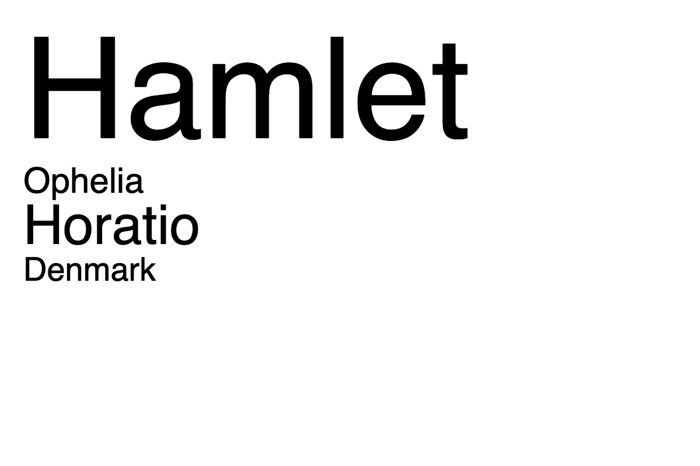

Your sketch:
The assets folder contains a .txt file called hamlet.txt (the same file used as an example in lecture). hamlet.txt contains the full text of Shakespeare's Hamlet and some preamble text. Your task is to do some light analysis of hamlet.txt and visualise the results as a simplified word cloud. In a word cloud, the size of a word reflects its frequency in a text--the bigger the word, the more frequent it is.
Create a canvas at a size of your choosing and use loadStrings() to read the contents of hamlet.txt into
the sketch.
Write a function called getWords that takes one argument, an array of strings, and returns an array of all "words" in the
array of strings. In this context, a word is any string of letters or numbers excluding spaces and punctuation. For example, the
line, "'Tis now struck 12. Get thee to bed, Francisco.", contains 9 words: "Tis", "now", "struck", "12", "Get",
"thee", "to", "bed", and "Francisco". Here is an example of how the function will be used:
let words = getWords(hamletText);
...where hamletText is the array of strings returned by loadStrings() when hamlet.txt is
read in to the sketch. words should be an array of 35135 strings.
Next, write a function called countOccurrences that takes two parameters. The first parameter should be an
array of words (as defined above) and the second parameter is a word to search for in the array. The function should return
the number of times the search word occurs in the array of words. The function should be case insensitive (e.g. "Hamlet" is equivalent to "hamlet").
The function should also match whole words only. For example, if the search word is "Hamlet" and the array of words contains "Hamlets", "Hamlets"
would not be considered an occurrence of "Hamlet".
The check file for this exercise will test getWords() and countOccurrences(). Once you have confirmed that
both functions are working correctly, use them to create a visualisation that shows the frequency of each of the following names in hamlet.txt:
You can choose exactly how to visualise the frequencies.
See the Hint section below for help with common errors.
Expected output:

getWordsUse the splitTokens() function to
split each line in the file by spaces and punctuation. You will need to use a for loop and split each element in the
array passed to the function. You will need a second for loop to iterate through the array of words created by
splitTokens() and add each word to an array that stores the words found on all lines.
Some punctuation used in splitTokens() will cause an error. These characters need to be "escaped". Here are some tips for addressing these errors:
"\\-". This error occurs because the hyphen is used in a special way by the splitTokens()
function. Adding the backslashes tells p5.js you really want to split on a hyphen!
"\"" or '\''."\\\\". The last backslash while be used as a delimiter.To help you put the above points together, here is what splitTokens would look like with all the characters discussed in the bullet points:
splitTokens(someStr, "\\-\"\\\\");
... this would split someStr whenever the following characters are found: -, ", and \.
countOccurrencesUse a for loop to iterate through each word in the array of words passed to the function as an argument. If a word is equal to the search word supplied as the second function argument, increase the count. To make the function case insensitive, consider converting both the search word and the words in the array to lower case before comparing.